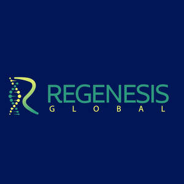

Trade Mark Journal No.2025/026 27 June 2025
UK00004186533 9 April 2025 (5,10,35,41,44)

- Class 5
- Anti-oxidant supplements; Beverages adapted for medicinal purposes; Capsules for pharmaceutical, nutraceutical and medical purposes; Capsules sold empty for pharmaceuticals, nutraceuticals and medicines; Cells for medical use; Dietary and nutritional supplements; Food supplements; Herbal supplements; Homeopathic pharmaceuticals; Homeopathic supplements; Implants for guided tissue regeneration; Liquid nutritional supplements; Medicinal herbs and herbal extracts; Medicinal preparations, supplements and substances; Medicinal teas; Nutraceutical preparations for therapeutic or medical purposes; Nutraceuticals for therapeutic purposes; Nutritional drink mix for use as a meal replacement; Pharmaceutical drugs; Pharmaceutical preparations containing stem cells; Pharmaceuticals; Prebiotic and probiotic supplements; Stem cells for medical purposes; Vitamin and mineral supplements; Vitamin drinks; Vitamins and vitamin preparations; all of the aforementioned for treating joint pain, osteoarthritis, and sports-related injuries, and repairing soft tissue; none of the aforementioned for anti-ageing or dental-related purposes.
- Class 10
- Apparatus for DNA and RNA testing for medical purposes; Apparatus for taking body fluid samples; Apparatus for the regeneration of stem cells for medical purposes; Apparatus for use in medical analysis; Braces for joint fixation; Diagnostic apparatus for medical purposes and use; Diagnostic ultrasound apparatus and instruments for medical use; Diagnostic, examination, and monitoring equipment; Electrical appliances for medical purposes; Electromagnetic medical apparatus; Electronic apparatus for medical purposes; Genetic testing apparatus for medical purposes; Kits for use in epigenetic testing for medical purposes comprising a saliva collection tube, caps for tube, and mailing packaging for use in DNA (biological age test) testing of humans; Medical and veterinary apparatus, devices and instruments; Medical apparatus and instruments; Medical braces; Medical diagnostic apparatus for medical purposes; Medical imaging apparatus; Medical radiation apparatus; Medical test kits for home use; Medical testing and diagnostic apparatus and kits; Medical ultrasound apparatus; Orthopaedic braces; Scanners for medical diagnosis; Scanning apparatus for medical use; Testing probes for medical diagnostic purposes; Ultrasonic apparatus for medical use in scanning the body; all of the aforementioned for treating joint pain, osteoarthritis, and sports-related injuries, and repairing soft tissue; none of the aforementioned for anti-ageing or dental-related purposes.
- Class 35
- Advertising services; Business administration and management; Display services for merchandise; Marketing; Merchandising; Presentation of goods on communications media for retail purposes; Provision of an online marketplace for buyers and sellers of goods and services; Publicity and sales promotion; Retail services connected with the sale of health and wellness products and devices, and health-related food and drink products namely, dietary and nutritional supplements, and food and drink; Retail or wholesale services for pharmaceutical and sanitary preparations, medical supplies, surgical, medical and veterinary apparatus and instruments, and orthopaedic articles; information, consultancy and advice in relation to the foregoing; none of the aforementioned in the fields of dentistry, cosmetic or beauty care, or in relation to goods or services for the purposes of anti-ageing.
- Class 41
- Arranging and conducting of educational events for charitable purposes; Arranging and conducting of entertainment events for charitable fundraising purposes; Arranging and conducting of in-person educational forums and interviews; Arranging, conducting, managing, organising, producing and providing educational events, seminars, workshops, courses and conferences; Charitable services, namely, education and training services; Coaching (training); Creation of educational content; Education and training services; Education and training services to spread public awareness of medical conditions, issues, and news; Electronic publication; Electronic publication in the field of medicine and health; Health education; Medical education services; Organisation of exhibitions for educational purposes; Provision of training and online information in the field of medicine and health; Publication of multimedia material online; information, consultancy and advice in relation to the foregoing; none of the aforementioned in the fields of dentistry, cosmetic or beauty care.
- Class 44
- Advisory services relating to health care; Dietary and nutritional counselling, advice, guidance and information; Dispensing of pharmaceuticals; Health advice and information services; Health care; Health care services; Health clinic services [medical]; Health counselling; Health counselling and consultancy; Health risk assessment; Health screening; Medical assistance; Medical assistance consultancy provided by doctors and other specialised medical personnel; Medical care; Medical clinics; Medical consultations; Medical counselling; Medical diagnostic services; Medical evaluation services; Medical examination; Medical health assessment services; Medical imaging services; Medical information services; Medical information services provided via the Internet; Medical services; Medical services relating to the removal, treatment and processing of stem cells; Medical testing; Medical ultrasound services for medical purposes; Mobile medical clinic services; Osteoporosis screening; Pharmaceutical consultation; Pharmacy services; Physiotherapy; Preparation of prescriptions by pharmacists; Providing medical information in the healthcare sector; Providing medical support in the monitoring of patients receiving medical treatments; Provision of health care services; Provision of health information; Psychological services; Regenerative medicine services; Services for the testing of blood; Stem cell storage; Stem cell therapy services; Telemedicine services; Therapy services; information, consultancy and advice in relation to the foregoing; none of the aforementioned in the fields of dentistry, cosmetic or beauty care, or for the purposes of anti-ageing.
Regenesis Orthobiologics Limited
Representative: LEGALVISION LAW UK LTD